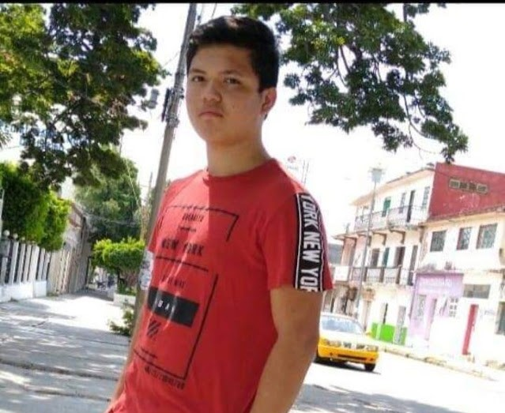
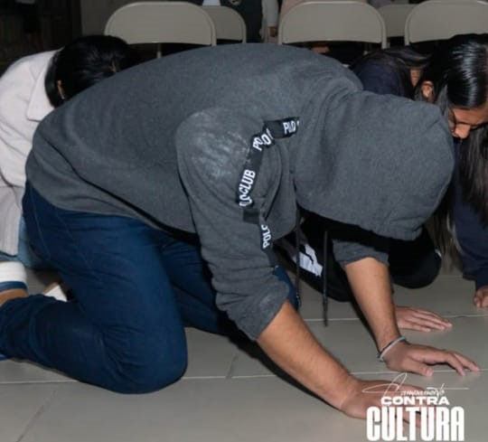

ALBUM DE DANIEL
Me llamo daniel arturo, soy alguien extrovertido, me gusta practicar cualquier tipo de deporte, los deportes que mas he practicado es el futbol americano, futbol soccer y voleil.
"MIS HERMANOS"
Cuando habia visto a mis hermanos despues de muchos años, la cual nosotros 3 salimos a pasear donde nosotros gustabamos
Placeholder OAXACA
Cuando visite por primera vez salina cruz, Oaxaca, pero nunca pude ir al mar :)
Placeholder DE PORTADA
En diciembre del 2022 habia ido a un campamento por parte de mi iglesia, por primera vez, y sali en la portada de una imagen de instagram
En diciembre del 2022 habia ido a un campamento por parte de mi iglesia, por primera vez, y sali en la portada de una imagen de instagram
Cuando visite por primera vez salina cruz, Oaxaca, pero nunca pude ir al mar :)
"MIS HERMANOS"